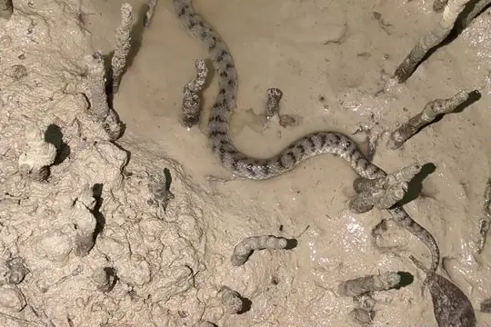
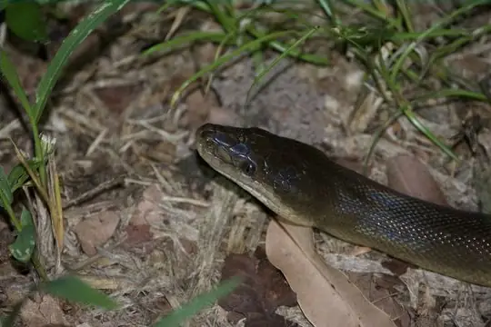
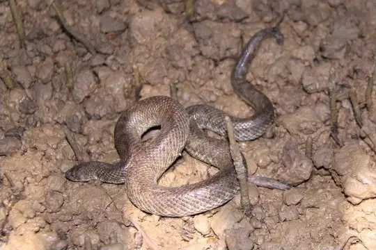
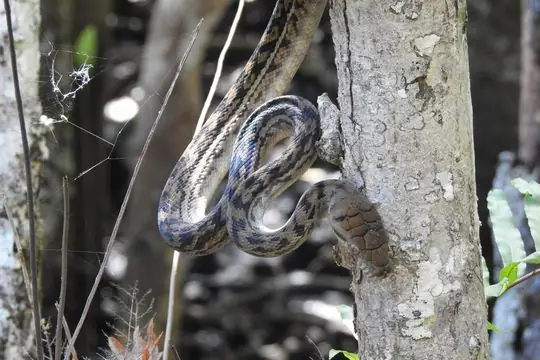
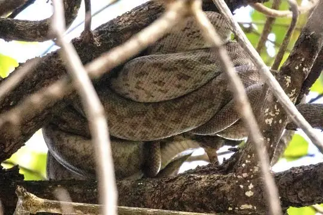
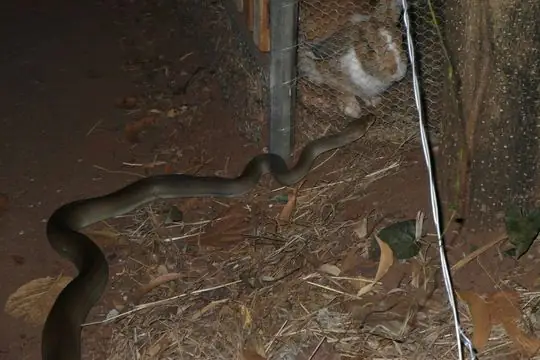
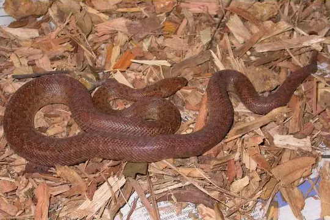
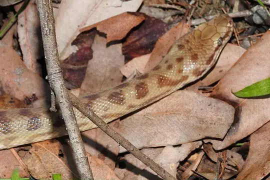
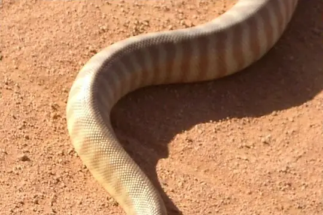

Snakes of Australia
215 snake species are recorded in Australia in SnakeList: 138 venomous and 77 non-venomous, from 7 families.
- 215species
- 138venomous
- 77non-venomous
- 7families
These totals count the snakes SnakeList records as living in Australia, including 1 extinct or fossil species. A species counts if it is recorded anywhere in the country, so not every snake lives in every region.
Species
Showing 215 species
- No photo yetArafura Sea SnakeAipysurus tenuis
- No photo yetArafura Smooth SeasnakeParahydrophis mertoni
 Arnhem Shovel-nosed SnakeBrachyurophis morrisi
Arnhem Shovel-nosed SnakeBrachyurophis morrisi Australian black snakePseudechis porphyriacus
Australian black snakePseudechis porphyriacus Australian BokadamCerberus australis
Australian BokadamCerberus australis Bandy BandyVermicella annulata
Bandy BandyVermicella annulata BardickEchiopsis curta
BardickEchiopsis curta Barkly Tableland Death AdderAcanthophis hawkei
Barkly Tableland Death AdderAcanthophis hawkei- No photo yetBarrow Island Blind SnakeAnilios longissimus
- No photo yetBatillus Blind SnakeAnilios batillus
 Beaked Blind SnakeAnilios waitii
Beaked Blind SnakeAnilios waitii- No photo yetBelcher's Sea SnakeHydrophis belcheri
 Bibron's Pacific BoaCandoia bibroni
Bibron's Pacific BoaCandoia bibroni Black Whip SnakeDemansia vestigiata
Black Whip SnakeDemansia vestigiata Black-headed PythonAspidites melanocephalus
Black-headed PythonAspidites melanocephalus Black-necked WhipsnakeDemansia calodera
Black-necked WhipsnakeDemansia calodera Black-striped Snake (nigrostriatus)Cryptophis nigrostriatus
Black-striped Snake (nigrostriatus)Cryptophis nigrostriatus Blackish Blind SnakeAnilios nigrescens
Blackish Blind SnakeAnilios nigrescens- No photo yetBlunt-snouted BlindsnakeAnilios obtusifrons
 Broad-headed SnakeHoplocephalus bungaroides
Broad-headed SnakeHoplocephalus bungaroides
Broome Mangrove SnakeMyron resetari
Brown Water PythonLiasis fuscus Brown-snouted Blind SnakeAnilios wiedii
Brown-snouted Blind SnakeAnilios wiedii- No photo yetBuff-snouted Blind SnakeAnilios margaretae
 Bush’s Hooded SnakeSuta spectabilis
Bush’s Hooded SnakeSuta spectabilis Butler's SnakePseudechis butleri
Butler's SnakePseudechis butleri Cape York Striped Blind SnakeAnilios chamodracaena
Cape York Striped Blind SnakeAnilios chamodracaena Carpentaria Whip SnakeCryptophis boschmai
Carpentaria Whip SnakeCryptophis boschmai Carpet PythonMorelia spilota
Carpet PythonMorelia spilota Centralian Bandy BandyVermicella vermiformis
Centralian Bandy BandyVermicella vermiformis Centralian Blind SnakeAnilios centralis
Centralian Blind SnakeAnilios centralis Centralian Carpet PythonMorelia bredli
Centralian Carpet PythonMorelia bredli Children's PythonAntaresia childreni
Children's PythonAntaresia childreni- No photo yetChristmas Island Blind SnakeRamphotyphlops exocoeti
 Claw-snouted Blind SnakeAnilios unguirostris
Claw-snouted Blind SnakeAnilios unguirostris Coastal Burrowing SnakeSimoselaps littoralis
Coastal Burrowing SnakeSimoselaps littoralis Coastal TaipanOxyuranus scutellatus
Coastal TaipanOxyuranus scutellatus Cogger's sea snakeHydrophis coggeri
Cogger's sea snakeHydrophis coggeri Collared Whip SnakeDemansia torquata
Collared Whip SnakeDemansia torquata Collett's SnakePseudechis colletti
Collett's SnakePseudechis colletti Common Death AdderAcanthophis antarcticus
Common Death AdderAcanthophis antarcticus Common Wolf Snake (capucinus)Lycodon capucinus
Common Wolf Snake (capucinus)Lycodon capucinus Copperhead SnakeAustrelaps superbus
Copperhead SnakeAustrelaps superbus Coral SnakeBrachyurophis australis
Coral SnakeBrachyurophis australis
Crab-eating SnakeFordonia leucobalia Crowned SnakeElapognathus coronatus
Crowned SnakeElapognathus coronatus- No photo yetDampierland Burrowing SnakeSimoselaps minimus
 Dark-spined Blind SnakeAnilios bicolor
Dark-spined Blind SnakeAnilios bicolor- No photo yetDarwin Blind SnakeAnilios tovelli
 De Vis Banded SnakeDenisonia devisi
De Vis Banded SnakeDenisonia devisi Desert Banded SnakeSimoselaps bertholdi
Desert Banded SnakeSimoselaps bertholdi Desert Death AdderAcanthophis pyrrhus
Desert Death AdderAcanthophis pyrrhus Dubois' Sea SnakeAipysurus duboisii
Dubois' Sea SnakeAipysurus duboisii DugitePseudonaja affinis
DugitePseudonaja affinis Dunmall's SnakeFurina dunmalli
Dunmall's SnakeFurina dunmalli Dwarf Crowned SnakeCacophis krefftii
Dwarf Crowned SnakeCacophis krefftii Eastern Brown SnakePseudonaja textilis
Eastern Brown SnakePseudonaja textilis Egg-eating Sea SnakeEmydocephalus annulatus
Egg-eating Sea SnakeEmydocephalus annulatus Einasleigh Shovel-nosed SnakeBrachyurophis campbelli
Einasleigh Shovel-nosed SnakeBrachyurophis campbelli Elegant SeasnakeHydrophis elegans
Elegant SeasnakeHydrophis elegans- No photo yetEstuarine seasnakeHydrophis vorisi
 Fannie Bay Blind SnakeAnilios nema
Fannie Bay Blind SnakeAnilios nema- No photo yetFassifern Blind SnakeAnilios insperatus
 FilesnakeAcrochordus arafurae
FilesnakeAcrochordus arafurae- No photo yetFine-spined SeasnakeHydrophis czeblukovi
 Gane's Blind SnakeAnilios ganei
Gane's Blind SnakeAnilios ganei Golden Crowned SnakeCacophis squamulosus
Golden Crowned SnakeCacophis squamulosus Gould's Black-headed SnakeSuta gouldii
Gould's Black-headed SnakeSuta gouldii Greater SeasnakeHydrophis major
Greater SeasnakeHydrophis major Green Tree PythonMorelia viridis
Green Tree PythonMorelia viridis Green Tree SnakeDendrelaphis punctulatus
Green Tree SnakeDendrelaphis punctulatus Green treesnakeDendrelaphis calligaster
Green treesnakeDendrelaphis calligaster Grey SnakeHemiaspis damelii
Grey SnakeHemiaspis damelii Grey WhipsnakeDemansia simplex
Grey WhipsnakeDemansia simplex Grey-naped SnakeFurina tristis
Grey-naped SnakeFurina tristis- No photo yetGroote Dwarf Blind SnakeAnilios minimus
 Gwardar (nuchalis)Pseudonaja nuchalis
Gwardar (nuchalis)Pseudonaja nuchalis- No photo yetHale River Blind SnakeAnilios fossor
 Half-girdled SnakeBrachyurophis semifasciatus
Half-girdled SnakeBrachyurophis semifasciatus Highlands CopperheadAustrelaps ramsayi
Highlands CopperheadAustrelaps ramsayi Ingram's Brown SnakePseudonaja ingrami
Ingram's Brown SnakePseudonaja ingrami Inland TaipanOxyuranus microlepidotus
Inland TaipanOxyuranus microlepidotus Interior Blind SnakeAnilios endoterus
Interior Blind SnakeAnilios endoterus Intermediate Bandy BandyVermicella intermedia
Intermediate Bandy BandyVermicella intermedia Kimberley Death AdderAcanthophis cryptamydros
Kimberley Death AdderAcanthophis cryptamydros- No photo yetKimberley Deep-soil Blind SnakeAnilios howi
- No photo yetKimberley Shallow-soil Blind SnakeAnilios kimberleyensis
 King's SeasnakeHydrophis kingii
King's SeasnakeHydrophis kingii
Kinghorn's Scrub PythonSimalia kinghorni- No photo yetLaboute's Sea SnakeHydrophis laboutei
 Lake Cronin SnakeParoplocephalus atriceps
Lake Cronin SnakeParoplocephalus atriceps- No photo yetLeaf-scaled SeasnakeAipysurus foliosquama
 Long-beaked Blind SnakeAnilios grypus
Long-beaked Blind SnakeAnilios grypus- No photo yetLong-tailed WhipsnakeDemansia flagellatio
 Macleay's Mud SnakePseudoferania polylepis
Macleay's Mud SnakePseudoferania polylepis Mainland Tiger SnakeNotechis scutatus
Mainland Tiger SnakeNotechis scutatus Mair's KeelbackTropidonophis mairii
Mair's KeelbackTropidonophis mairii Mallee Black-backed SnakeSuta nigriceps
Mallee Black-backed SnakeSuta nigriceps Marbled Sea SnakeAipysurus eydouxii
Marbled Sea SnakeAipysurus eydouxii Marsh Snake (signata)Hemiaspis signata
Marsh Snake (signata)Hemiaspis signata Masters' SnakeDrysdalia mastersii
Masters' SnakeDrysdalia mastersii McDowell's SeasnakeHydrophis macdowelli
McDowell's SeasnakeHydrophis macdowelli Mengden's GwardarPseudonaja mengdeni
Mengden's GwardarPseudonaja mengdeni Monk SnakeSuta monachus
Monk SnakeSuta monachus- No photo yetMornington Blind SnakeAnilios vagurima
 Mosiac Sea SnakeAipysurus mosaicus
Mosiac Sea SnakeAipysurus mosaicus Mulga SnakePseudechis australis
Mulga SnakePseudechis australis Muller's Snake (bicolor)Rhinoplocephalus bicolor
Muller's Snake (bicolor)Rhinoplocephalus bicolor Murchison Blind SnakeAnilios leptosoma
Murchison Blind SnakeAnilios leptosoma Mustard-bellied SnakeDrysdalia rhodogaster
Mustard-bellied SnakeDrysdalia rhodogaster Myal SnakeSuta suta
Myal SnakeSuta suta Narrow-banded Burrowing SnakeBrachyurophis fasciolatus
Narrow-banded Burrowing SnakeBrachyurophis fasciolatus Narrow-headed WhipsnakeDemansia angusticeps
Narrow-headed WhipsnakeDemansia angusticeps North-western Mangrove SeasnakeEphalophis greyae
North-western Mangrove SeasnakeEphalophis greyae North-western Shovel-nosed SnakeBrachyurophis approximans
North-western Shovel-nosed SnakeBrachyurophis approximans Northern Bandy BandyVermicella multifasciata
Northern Bandy BandyVermicella multifasciata Northern Blind Snake (diversus)Anilios diversus
Northern Blind Snake (diversus)Anilios diversus Northern Death AdderAcanthophis praelongus
Northern Death AdderAcanthophis praelongus Northern Desert Banded SnakeSimoselaps anomalus
Northern Desert Banded SnakeSimoselaps anomalus Northern Dward-crowned SnakeCacophis churchilli
Northern Dward-crowned SnakeCacophis churchilli Northern Shovel-nosed SnakeBrachyurophis roperi
Northern Shovel-nosed SnakeBrachyurophis roperi Northern White-Lipped PythonLeiopython albertisii
Northern White-Lipped PythonLeiopython albertisii
Oenpelli PythonNyctophilopython oenpelliensis
Olive PythonLiasis olivaceus Olive Sea SnakeAipysurus laevis
Olive Sea SnakeAipysurus laevis Olive WhipsnakeDemansia olivacea
Olive WhipsnakeDemansia olivacea Orange-naped SnakeFurina ornata
Orange-naped SnakeFurina ornata- No photo yetOrd Curl SnakeSuta ordensis
 Ornamental SnakeDenisonia maculata
Ornamental SnakeDenisonia maculata Ornate Sea SnakeHydrophis ornatus
Ornate Sea SnakeHydrophis ornatus Pacific seasnakeHydrophis pacificus
Pacific seasnakeHydrophis pacificus Pale-headed Blind SnakeAnilios hamatus
Pale-headed Blind SnakeAnilios hamatus Pale-headed SnakeHoplocephalus bitorquatus
Pale-headed SnakeHoplocephalus bitorquatus Papuan BlacksnakePseudechis papuanus
Papuan BlacksnakePseudechis papuanus Papuan Death AdderAcanthophis rugosus
Papuan Death AdderAcanthophis rugosus Papuan Spotted PythonAntaresia papuensis
Papuan Spotted PythonAntaresia papuensis Papuan Whip SnakeDemansia papuensis
Papuan Whip SnakeDemansia papuensis Peninsula Brown SnakePseudonaja inframacula
Peninsula Brown SnakePseudonaja inframacula Pilbara Bandy BandyVermicella snelli
Pilbara Bandy BandyVermicella snelli Pilbara Blind SnakeAnilios pilbarensis
Pilbara Blind SnakeAnilios pilbarensis Pilbara Hooded SnakeSuta gaikhorstorum
Pilbara Hooded SnakeSuta gaikhorstorum Pink SnakeCryptophis incredibilis
Pink SnakeCryptophis incredibilis- No photo yetPlain SeasnakeHydrophis inornatus
 Port Darwin seasnakeHydrelaps darwiniensis
Port Darwin seasnakeHydrelaps darwiniensis Prong-snouted Blind SnakeAnilios bituberculatus
Prong-snouted Blind SnakeAnilios bituberculatus Proximus Blind SnakeAnilios proximus
Proximus Blind SnakeAnilios proximus Pygmy CopperheadAustrelaps labialis
Pygmy CopperheadAustrelaps labialis Pygmy Mulga SnakePseudechis weigeli
Pygmy Mulga SnakePseudechis weigeli
Pygmy PythonAntaresia perthensis Red-naped SnakeFurina diadema
Red-naped SnakeFurina diadema Richardson's mangrove snakeMyron richardsonii
Richardson's mangrove snakeMyron richardsonii Ringed Brown SnakePseudonaja modesta
Ringed Brown SnakePseudonaja modesta- No photo yetRoberts' Blind SnakeAnilios robertsi
 Robust Blind SnakeAnilios ligatus
Robust Blind SnakeAnilios ligatus Robust Burrowing SnakeAntaioserpens albiceps
Robust Burrowing SnakeAntaioserpens albiceps Rosen's SnakeSuta fasciata
Rosen's SnakeSuta fasciata Rotund Blind SnakeAnilios pinguis
Rotund Blind SnakeAnilios pinguis Rough Scaled Sea SnakeHydrophis donaldi
Rough Scaled Sea SnakeHydrophis donaldi Rough-scaled PythonMorelia carinata
Rough-scaled PythonMorelia carinata Rough-scaled SnakeTropidechis carinatus
Rough-scaled SnakeTropidechis carinatus- No photo yetRound-tailed Blind SnakeAnilios aspina
 Rufous WhipsnakeDemansia rufescens
Rufous WhipsnakeDemansia rufescens- No photo yetSahul Reef SnakeAipysurus apraefrontalis
 Sand-diving Blind SnakeAnilios ammodytes
Sand-diving Blind SnakeAnilios ammodytes Sandamara Blind SnakeAnilios troglodytes
Sandamara Blind SnakeAnilios troglodytes- No photo yetSepik Beaked SeasnakeHydrophis zweifeli
 Shark Bay SeasnakeAipysurus pooleorum
Shark Bay SeasnakeAipysurus pooleorum- No photo yetSharp-snouted BlindsnakeAnilios systenos
 Shine's WhipsnakeDemansia shinei
Shine's WhipsnakeDemansia shinei Short-nosed SnakeElapognathus minor
Short-nosed SnakeElapognathus minor Slaty-grey snakeStegonotus australis
Slaty-grey snakeStegonotus australis- No photo yetSlender SeasnakeHydrophis gracilis
- No photo yetSmall-eyed Blind SnakeAnilios micromma
 Small-eyed SnakeCryptophis nigrescens
Small-eyed SnakeCryptophis nigrescens Small-headed Blind Snake (affinis)Anilios affinis
Small-headed Blind Snake (affinis)Anilios affinis Soil-crack WhipsnakeDemansia rimicola
Soil-crack WhipsnakeDemansia rimicola Sombre WhipsnakeDemansia quaesitor
Sombre WhipsnakeDemansia quaesitor Southern Blind Snake (australis)Anilios australis
Southern Blind Snake (australis)Anilios australis- No photo yetSplendid Blind SnakeAnilios splendidus
 Spotted Black SnakePseudechis guttatus
Spotted Black SnakePseudechis guttatus Spotted Brown SnakePseudonaja guttata
Spotted Brown SnakePseudonaja guttata
Spotted PythonAntaresia maculosa Spotted Sea SnakeHydrophis ocellatus
Spotted Sea SnakeHydrophis ocellatus Spotted SnakeSuta punctata
Spotted SnakeSuta punctata Stephen's Banded SnakeHoplocephalus stephensii
Stephen's Banded SnakeHoplocephalus stephensii Strap-snouted Brown SnakePseudonaja aspidorhyncha
Strap-snouted Brown SnakePseudonaja aspidorhyncha Striate Blind SnakeAnilios broomi
Striate Blind SnakeAnilios broomi Sylvia's Blind SnakeAnilios silvia
Sylvia's Blind SnakeAnilios silvia Top End Blind SnakeAnilios guentheri
Top End Blind SnakeAnilios guentheri Unbanded Shovel-nosed SnakeBrachyurophis incinctus
Unbanded Shovel-nosed SnakeBrachyurophis incinctus Variable Black-naped SnakeSuta dwyeri
Variable Black-naped SnakeSuta dwyeri- No photo yetWarrego Burrowing SnakeAntaioserpens warro
 Weipa Bandy BandyVermicella parscauda
Weipa Bandy BandyVermicella parscauda- No photo yetWest Kimberley BlindsnakeAnilios zonula
- No photo yetWestern Black-striped SnakeNeelaps calonotus
 Western Carpentaria SnakeCryptophis pallidiceps
Western Carpentaria SnakeCryptophis pallidiceps Western Carpet PythonMorelia imbricata
Western Carpet PythonMorelia imbricata Western Desert TaipanOxyuranus temporalis
Western Desert TaipanOxyuranus temporalis Western Turtle-headed Sea SnakeEmydocephalus orarius
Western Turtle-headed Sea SnakeEmydocephalus orarius Whip Hooded SnakeSuta flagellum
Whip Hooded SnakeSuta flagellum White-lipped SnakeDrysdalia coronoides
White-lipped SnakeDrysdalia coronoides White-naped SnakeCacophis harriettae
White-naped SnakeCacophis harriettae
WomaAspidites ramsayi- No photo yetYampi Blind SnakeAnilios yampiensis
- No photo yetYapen Island Stout-tailed SnakeCalamophis jobiensis
 Yellow Sea SnakeHydrophis spiralis
Yellow Sea SnakeHydrophis spiralis Yellow-faced Whipsnake (psammophis)Demansia psammophis
Yellow-faced Whipsnake (psammophis)Demansia psammophis Yellow-faced Whipsnake (reticulata)Demansia reticulata
Yellow-faced Whipsnake (reticulata)Demansia reticulata Yellow-naped SnakeFurina barnardi
Yellow-naped SnakeFurina barnardi- No photo yetYirrkala Blind SnakeAnilios yirrikalae
- No photo yetEphalophis greyi
- No photo yetHydrophis mcdowelli
- No photo yetMorelia kinghorni
- Known from fossilsMorelia riversleighensis
- No photo yetNeelaps bimaculatus
No snakes in Australia match.
Australia’s snakes in numbers
- Families: Elapidae 138, Typhlopidae 46, Pythonidae 18, Homalopsidae 6, Colubridae 5, Acrochordidae 1, Boidae 1.
- 171 are recorded in no other country in SnakeList: Arafura Sea Snake, Arnhem Shovel-nosed Snake, Australian black snake, Bandy Bandy, Bardick, Barkly Tableland Death Adder, Barrow Island Blind Snake, Batillus Blind Snake, Beaked Blind Snake, Black-headed Python, Black-necked Whipsnake, Black-striped Snake (nigrostriatus) and 159 more.
- 1 is extinct or known only from fossils.